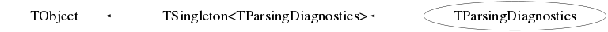

class TParsingDiagnostics: public TSingleton<TParsingDiagnostics>
Function Members (Methods)
public:
| virtual | ~TParsingDiagnostics() |
| void | TObject::AbstractMethod(const char* method) const |
| virtual void | TObject::AppendPad(Option_t* option = "") |
| void | BadFragment(Short_t detType) |
| virtual void | TObject::Browse(TBrowser* b) |
| ULong_t | TObject::CheckedHash() |
| static TClass* | Class() |
| virtual const char* | TObject::ClassName() const |
| virtual void | Clear(Option_t* opt = "all") |
| virtual TObject* | TObject::Clone(const char* newname = "") const |
| virtual Int_t | TObject::Compare(const TObject* obj) const |
| virtual void | Copy(TObject&) const |
| virtual void | TObject::Delete(Option_t* option = "")MENU |
| virtual Int_t | TObject::DistancetoPrimitive(Int_t px, Int_t py) |
| virtual void | Draw(Option_t* opt = "") |
| virtual void | TObject::DrawClass() constMENU |
| virtual TObject* | TObject::DrawClone(Option_t* option = "") constMENU |
| virtual void | TObject::Dump() constMENU |
| virtual void | TObject::Error(const char* method, const char* msgfmt) const |
| virtual void | TObject::Execute(const char* method, const char* params, Int_t* error = 0) |
| virtual void | TObject::Execute(TMethod* method, TObjArray* params, Int_t* error = 0) |
| virtual void | TObject::ExecuteEvent(Int_t event, Int_t px, Int_t py) |
| virtual void | TObject::Fatal(const char* method, const char* msgfmt) const |
| virtual TObject* | TObject::FindObject(const char* name) const |
| virtual TObject* | TObject::FindObject(const TObject* obj) const |
| static TParsingDiagnostics* | TSingleton<TParsingDiagnostics>::Get() |
| static TParsingDiagnostics* | TSingleton<TParsingDiagnostics>::GetAll() |
| virtual Option_t* | TObject::GetDrawOption() const |
| static Long_t | TObject::GetDtorOnly() |
| virtual const char* | TObject::GetIconName() const |
| virtual const char* | TObject::GetName() const |
| virtual char* | TObject::GetObjectInfo(Int_t px, Int_t py) const |
| static Bool_t | TObject::GetObjectStat() |
| virtual Option_t* | TObject::GetOption() const |
| virtual const char* | TObject::GetTitle() const |
| virtual UInt_t | TObject::GetUniqueID() const |
| void | GoodFragment(const shared_ptr<const TFragment>&) |
| void | GoodFragment(Short_t detType) |
| virtual Bool_t | TObject::HandleTimer(TTimer* timer) |
| virtual ULong_t | TObject::Hash() const |
| Bool_t | TObject::HasInconsistentHash() const |
| virtual void | TObject::Info(const char* method, const char* msgfmt) const |
| virtual Bool_t | TObject::InheritsFrom(const char* classname) const |
| virtual Bool_t | TObject::InheritsFrom(const TClass* cl) const |
| virtual void | TObject::Inspect() constMENU |
| void | TObject::InvertBit(UInt_t f) |
| virtual TClass* | IsA() const |
| virtual Bool_t | TObject::IsEqual(const TObject* obj) const |
| virtual Bool_t | TObject::IsFolder() const |
| Bool_t | TObject::IsOnHeap() const |
| virtual Bool_t | TObject::IsSortable() const |
| Bool_t | TObject::IsZombie() const |
| virtual void | TObject::ls(Option_t* option = "") const |
| void | TObject::MayNotUse(const char* method) const |
| virtual Bool_t | TObject::Notify() |
| Long_t | NumberOfBadFragments(Short_t detType) |
| Long_t | NumberOfGoodFragments(Short_t detType) |
| void | TObject::Obsolete(const char* method, const char* asOfVers, const char* removedFromVers) const |
| void | TObject::operator delete(void* ptr) |
| void | TObject::operator delete(void* ptr, void* vp) |
| void | TObject::operator delete[](void* ptr) |
| void | TObject::operator delete[](void* ptr, void* vp) |
| void* | TObject::operator new(size_t sz) |
| void* | TObject::operator new(size_t sz, void* vp) |
| void* | TObject::operator new[](size_t sz) |
| void* | TObject::operator new[](size_t sz, void* vp) |
| TParsingDiagnostics& | operator=(const TParsingDiagnostics&) |
| virtual void | TObject::Paint(Option_t* option = "") |
| virtual void | TObject::Pop() |
| ULong64_t | PPGCycleLength() |
| virtual void | Print(Option_t* opt = "") const |
| static void | TSingleton<TParsingDiagnostics>::PrintDirectory() |
| virtual Int_t | TObject::Read(const char* name) |
| void | ReadPPG(TPPG*) |
| virtual void | TObject::RecursiveRemove(TObject* obj) |
| void | TObject::ResetBit(UInt_t f) |
| virtual void | TObject::SaveAs(const char* filename = "", Option_t* option = "") constMENU |
| virtual void | TObject::SavePrimitive(ostream& out, Option_t* option = "") |
| static void | TSingleton<TParsingDiagnostics>::Set(TParsingDiagnostics* val) |
| void | TObject::SetBit(UInt_t f) |
| void | TObject::SetBit(UInt_t f, Bool_t set) |
| virtual void | TObject::SetDrawOption(Option_t* option = "")MENU |
| static void | TObject::SetDtorOnly(void* obj) |
| static void | TObject::SetObjectStat(Bool_t stat) |
| virtual void | TObject::SetUniqueID(UInt_t uid) |
| virtual void | ShowMembers(TMemberInspector& insp) const |
| virtual void | Streamer(TBuffer&) |
| void | StreamerNVirtual(TBuffer& ClassDef_StreamerNVirtual_b) |
| virtual void | TObject::SysError(const char* method, const char* msgfmt) const |
| Bool_t | TObject::TestBit(UInt_t f) const |
| Int_t | TObject::TestBits(UInt_t f) const |
| TParsingDiagnostics() | |
| TParsingDiagnostics(const TParsingDiagnostics&) | |
| virtual void | TObject::UseCurrentStyle() |
| virtual void | TObject::Warning(const char* method, const char* msgfmt) const |
| virtual Int_t | TObject::Write(const char* name = 0, Int_t option = 0, Int_t bufsize = 0) |
| virtual Int_t | TObject::Write(const char* name = 0, Int_t option = 0, Int_t bufsize = 0) const |
| void | WriteToFile(const char*) const |
protected:
| virtual void | TObject::DoError(int level, const char* location, const char* fmt, va_list va) const |
| void | TObject::MakeZombie() |
private:
| virtual Bool_t | CheckTObjectHashConsistency() const |
Data Members
public:
| static TObject::(anonymous) | TObject::kBitMask | |
| static TObject::EStatusBits | TObject::kCanDelete | |
| static TObject::EStatusBits | TObject::kCannotPick | |
| static TObject::EStatusBits | TObject::kHasUUID | |
| static TObject::(anonymous) | TObject::kInconsistent | |
| static TObject::EStatusBits | TObject::kInvalidObject | |
| static TObject::(anonymous) | TObject::kIsOnHeap | |
| static TObject::EStatusBits | TObject::kIsReferenced | |
| static TObject::EStatusBits | TObject::kMustCleanup | |
| static TObject::EStatusBits | TObject::kNoContextMenu | |
| static TObject::(anonymous) | TObject::kNotDeleted | |
| static TObject::EDeprecatedStatusBits | TObject::kObjInCanvas | |
| static TObject::(anonymous) | TObject::kOverwrite | |
| static TObject::(anonymous) | TObject::kSingleKey | |
| static TObject::(anonymous) | TObject::kWriteDelete | |
| static TObject::(anonymous) | TObject::kZombie |
private:
| map<UInt_t,long> | fDeadTime | map of deadtime per channel address |
| TH1F* | fIdHist | histogram of event survival |
| map<UInt_t,UInt_t> | fMaxChannelId | map of maximum channel id per channel address |
| time_t | fMaxDaqTimeStamp | maximum daq timestamp |
| Int_t | fMaxNetworkPacketNumber | maximum network packet id |
| map<UInt_t,long> | fMaxTimeStamp | map of maximum timestamp per channel address |
| map<UInt_t,UInt_t> | fMinChannelId | map of minimum channel id per channel address |
| time_t | fMinDaqTimeStamp | minimum daq timestamp |
| Int_t | fMinNetworkPacketNumber | minimum network packet id |
| map<UInt_t,long> | fMinTimeStamp | map of minimum timestamp per channel address |
| map<Short_t,Long_t> | fNumberOfBadFragments | map of number of bad fragments per detector type |
| map<Short_t,Long_t> | fNumberOfGoodFragments | map of number of good fragments per detector type |
| map<UInt_t,Long_t> | fNumberOfHits | map of number of hits per channel address |
| Long_t | fNumberOfNetworkPackets | |
| ULong64_t | fPPGCycleLength |
Class Charts



Function documentation
TParsingDiagnostics(const TParsingDiagnostics& )
void GoodFragment(const std::shared_ptr<const TFragment>& frag)
increment the counter of good fragments for this detector type and check if any trigger ids have been lost
void ReadPPG(TPPG* )
store different TPPG diagnostics like cycle length, length of each state, offset, how often each state was found
void WriteToFile(const char* ) const
Long_t NumberOfBadFragments(Short_t detType)